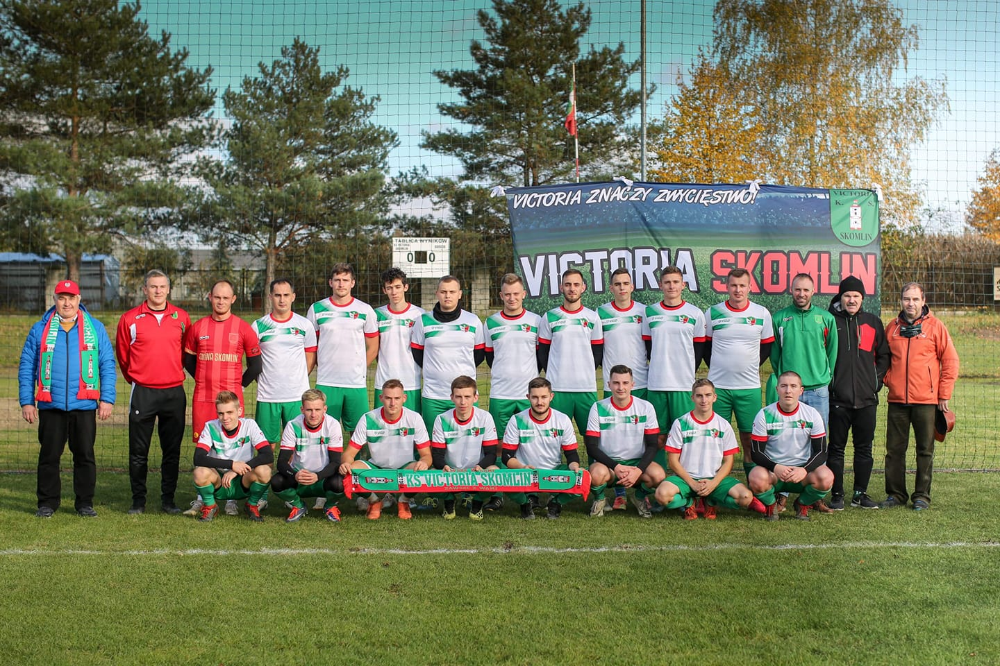
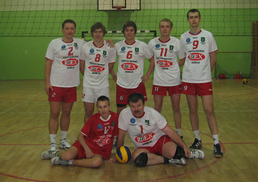
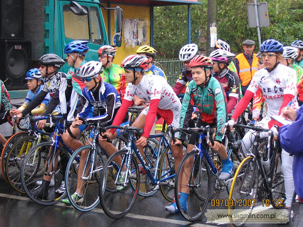

SKOMLIN
SKOMLINPubliczne przedszkole w Skomlinie:
Szkoła Podstawowa im. Komisji Edukacji Narodowej w Skomlinie:
Adres: Parkowa 6, 98-346 SkomlinTelefon: 43 842 69 69
Dyrektor: Jarosław Preś
Źródło: http://www.szkola-skomlin.pl
Sport
Piłka Nożna
KS Victoria Skomlin - drużyna sportowa założona w 1982 roku. Prezesem Skomlińskiej drużyny jest Pan Adam Spodymek.

Siatkówka
Drużyna siatkarska "IREX SKOMLIN" powstała w 2005 r. z inicjatywy Pana Ireneusza Fraszka, Krzysztofa Jeża i Dariusza Wiśniewskiego, jak również przez ich finansowana. W tym też roku drużyna przystąpiła do rozgrywek Wieluńskiej Ligi Siatkowej PLUS GSM zajmując niestety, 13 - ostatnie miejsce.

Kolarstwo
Przez niespełna 30 lat odbywało się tu tradycyjne kryterium uliczne im. Ryszarda Szynczewskiego. Niebezpiecznych sytuacji nigdy tu nie brakowało, kolarze muszą szczególnie uważać na skrzyżowaniu ul. Tysiąclecia i Parkowej.
